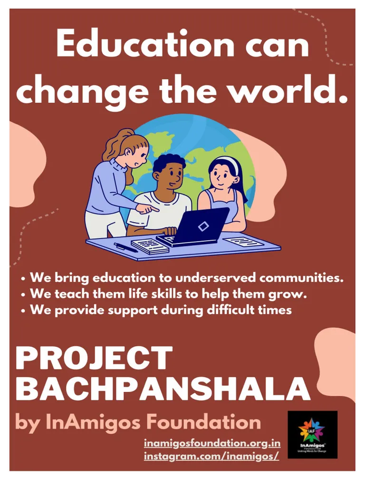
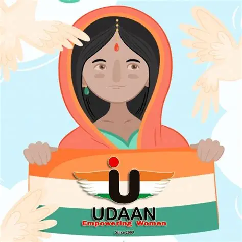
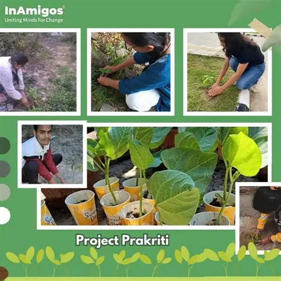

Our Initiatives
Programs designed to create long-term social impact.

Project SEVA
Food and clothing distribution initiatives helping families and individuals in need.

Project Bachpanshala
Educational support and learning opportunities for children from underserved communities.

Project Udaan
Empowering women through skill development, training, and awareness programs.

Project Prakriti
Tree plantation and environmental sustainability campaigns promoting a greener future.